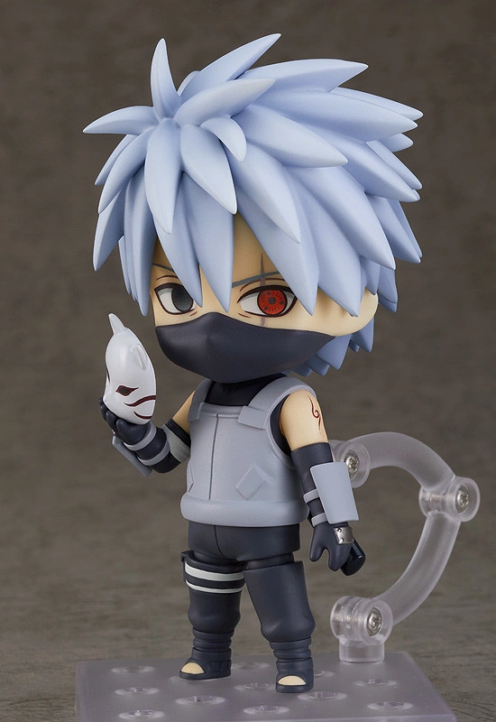
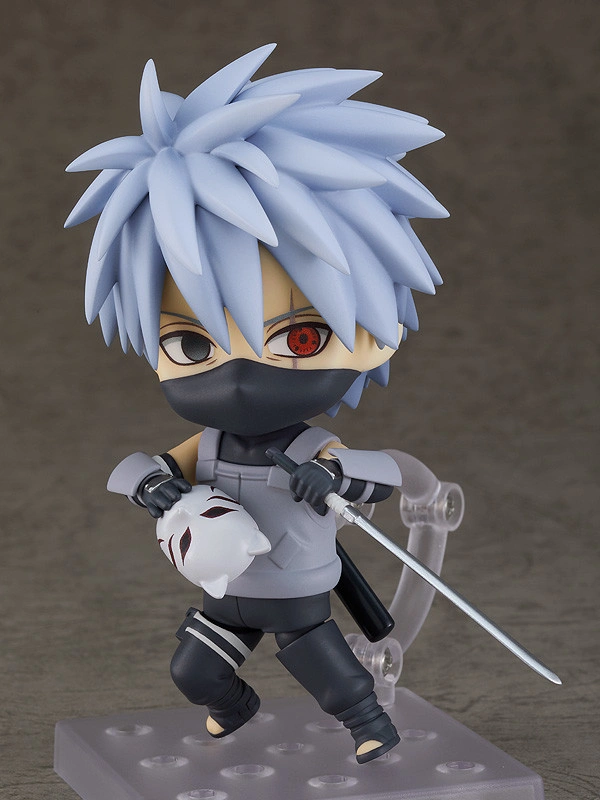
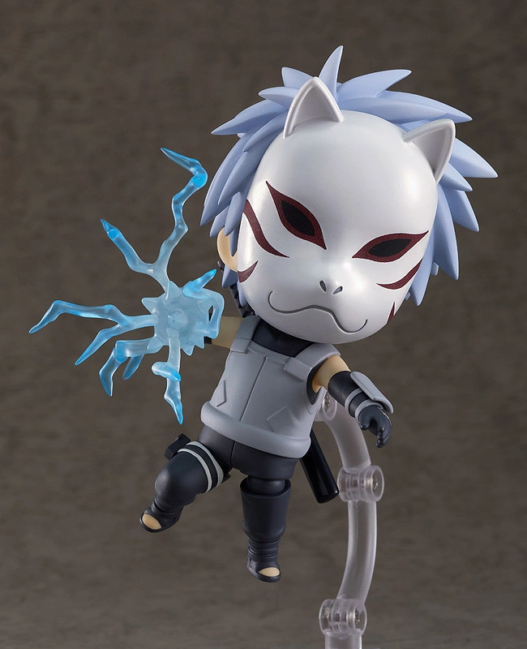

Kakashi's Anbu Arc: The Shinobi That Lives in the Darkness (カカシ暗部篇～闇を生きる忍, Kakashi Anbu Hen ~ Yami o Ikiru Shinobi,
English TV: Kakashi: Shadow of the Anbu Black Ops) is an arc of the Naruto: Shippūden anime. It covers episodes 349 to 361. The arc focuses on Kakashi
Hatake's Anbu background, while also exploring the backgrounds of others such as Yamato and Itachi Uchiha.[1] This arc takes place in the middle of the
Fourth Shinobi World War: Climax.


From the popular anime series "Naruto Shippuden" comes a Nendoroid of Kakashi Hatake from his time in the Anbu Black Ops!
He comes with two interchangeable face plates—a standard face plate and a glaring face plate. His fox mask is also removable.
Optional parts include his sword and a Lightning Blade effect part! Enjoy recreating your favorite scenes in Nendoroid form, and be sure to display
him with your other Nendoroids from the series!
